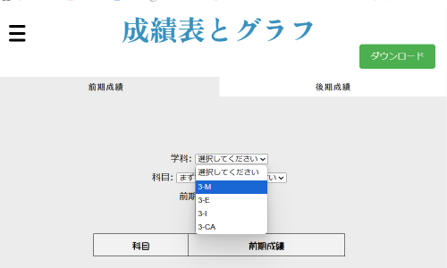
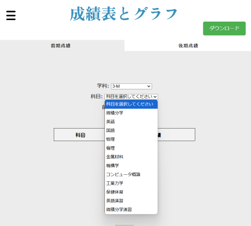
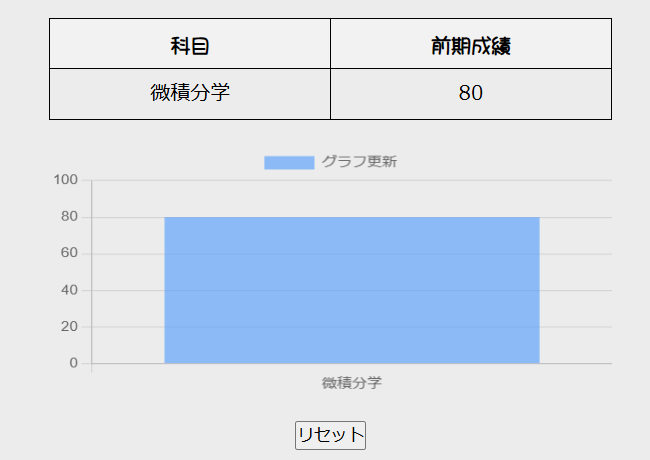
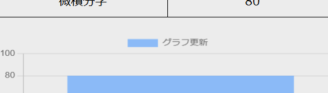

成績管理サイト
サイトの使い方
Step1
前期成績と後期成績の文字をクリックし、前期モードと後期モードに切り替えます。学科をクリックすると右図のような画面が出るので自分の学科を選択します。


Step2
科目をクリックすると左のような画面が出るので自分の表示させたい学科を選択して下の入力欄に点数を入力してください。表示させたい学科を選択したら下にある追加ボタンをクリックしてください。
Step3
追加ボタンをクリックすると右のような成績とグラフが表示されます。表をリセットする場合は下のリセットボタンをクリックしてください。


Step4
グラフの更新をするときは左のグラフ更新を2回クリックしてください。
それでは実際に使っていきましょう！